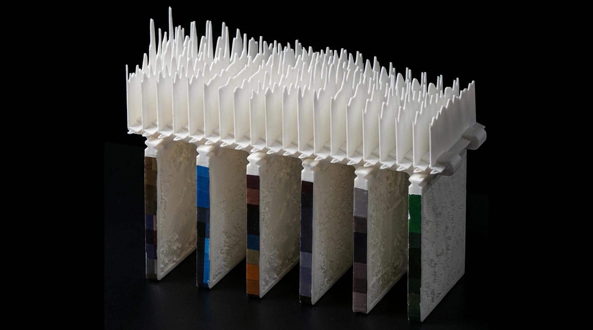
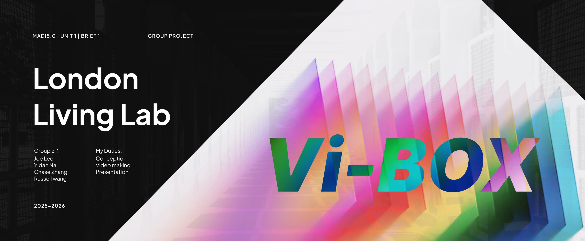
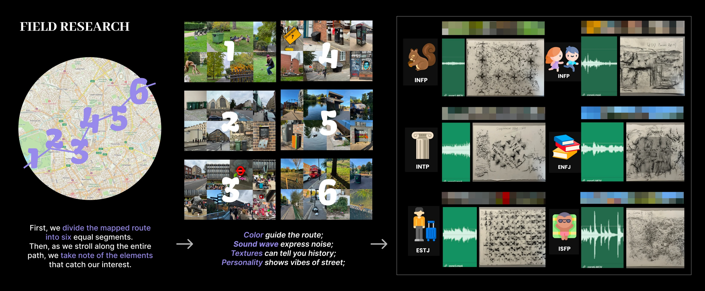
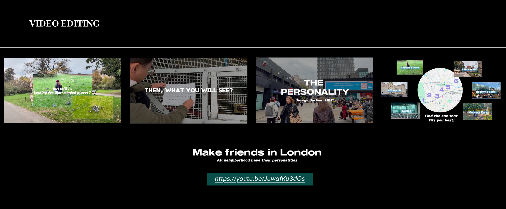
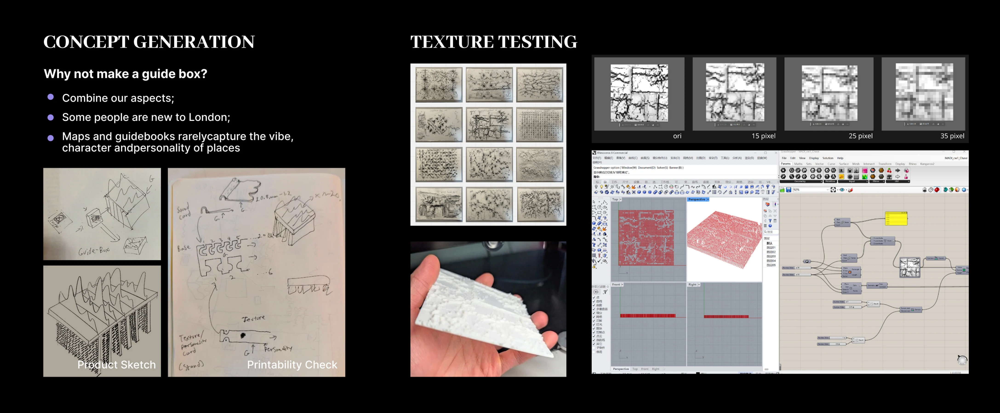
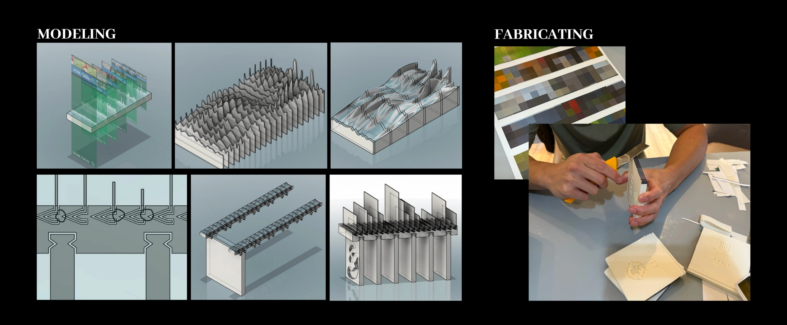
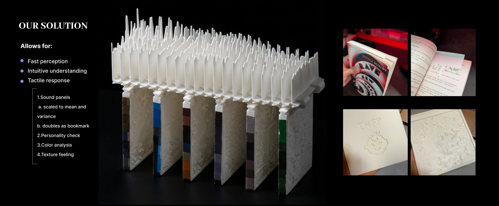

2025 · GROUP PROJECT
VIBOX
A Sensory Guide to the Personalities of London Neighbourhoods
VIBOX translates the colour, sound, texture and perceived personality of London streets into a tactile guide. It helps newcomers move beyond conventional maps and discover neighbourhoods whose atmosphere feels personally resonant.
PROJECT FILM
PROJECT DOCUMENTATION





